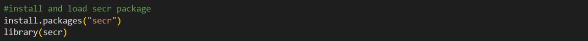
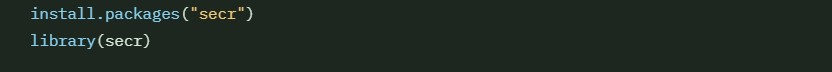
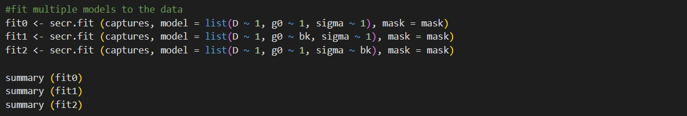
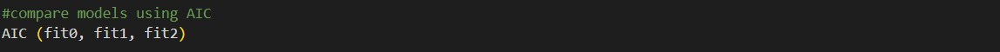
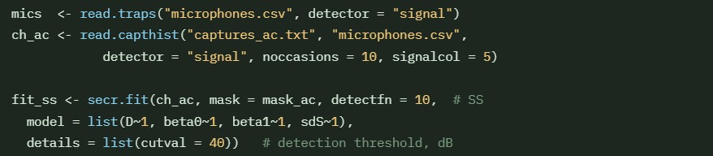

Portfolio Quarto Website
AIM: To improve model validation, data processing, data visualisation with the SECR package
SECR Package
Spatially Explicit Capture Recapture
Estimate the density and size of spatially distributed animal populations from detector arrays via passive acoustic monitors (PAMs) and camera traps, using the maximum-likelihood.
SECR models the detection locations and the histories of marked animals, allowing you to estimate population density and to fit a model to show how probability declines with distance from each detector, including spatial/temporal trends (Efford and Fewster, 2012).
Detection functions describe the probability of detection as a given detector declines with distance (non-euclidean) from animals activity centre, the most commonly used is Half-Normal (HN) (Efford and Schofield, 2022).
- Traps = detector coordinates & type
- capthist = detection histories per individual
- mask = habitat grid for the likelihood
The secr R package assumes the population is closed during the sampling period so there is no movement out of the area - no births, deaths, immigration or emigration occurs (Efford and Schofield, 2022).
- First install the package from CRAN
- Load the secr package
- List all available detection functions with ?detectfn

Detectors & Data
SECR needs a traps object (detector locations) and a capthist object (detection histories). This can be done with a csv file, or from different types of detectors. Each detector type shows how the detection data is recorded and how the likelihood is constructed.
Detector types:
| Type | Description | Common Use |
|---|---|---|
| single | Live trap - catches one animal per occasion | Small mammal pitfall |
| multi | Live trap - catches multiple animals simultaneously | Box traps |
| proximity | Presence without restricting movement | Camera traps, hair snags |
| count | Proximity detector allowing more than one detection per occasion | Passive sensors |
| signal | Detection with acoustic signal strength at each detector | Microphone arrays |
| polygon | Searched area counts | Transect surveys |
The capture history data needs to have the columns: session, animal ID, occasion and detector ID.
Animal IDs must be unique within a session. Otherwise use multi-season capthist objects.
A mask is a grid of habitat points extending beyond the detector array, covering all activity centres.

Fitting the Model
Most models are fitted with the default half-normal (HN) detector. Multiple models are created with different covariates, to find the optimal model. The three principal parameters are D (density), g0 (baseline detection probability at distance 0) and sigma (spatial scale of detection function in metres). First start with a baseline model, then add covariates and compare models.

Common predictors are bk (behavioral response), t (temporal variation) and Sex (individual covariate).
Model Validation & Selection
- Inspect parameter estimates → predict(fit0) with 95% confidence intervals
- Model Comparison → AIC(fit0, fit1)
- Density estimates → region.N(fit0)

Microphone Arrays & Signal Strength
Signal strength detectors record a binary detection to improve the accuracy and precisions of locations, measured in dB level. The detector type must be changed to signal.

- beta0 = source level at 1m
- beta1 = attenuation slope (dB/m)
For acoustic data the acre package can be used instead of secr, this allows for more efficient data analysis due to being created specifically for acoustics. See below
Example and ACRE Package
Example with “secr” package
Live Demo with the Ovenbird dataset.
Overview of “acre”
Important notes on using this package for acoustics.
Further Reading
For SECR visit the GitHub page of the creator, Murray Efford
For ACRE visit the GitHub page of the creator, Ben Stephenson
References
Clink, D.J., Zafar, M., Ahmad, A.H. and Lau, A.R. (2021). Limited Evidence for Individual Signatures or Site-Level Patterns pf Variation in Male Northern Gray Gibbon (Hylobates funereus) Duet Codas. International Journal of Primatology, 42(12), pp:1-19. DOI: 10.1007/s10764-021-00250-2.
Efford, M.G. and Fewster, R.M. (2012). Estimating population size by spatially explicit capture-recapture. Oikos, 122(6), pp. 918-928. DOI: 10.1111/j.1600-0706.2012.20440.x.
Efford, M.G. and Schofield, M.R. (2022). A review of movement models in open population capture-recapture. Methods in Ecology and Evolution, 13(10), pp. 2106-2118. DOI: 10.1111/2041-210X.13947.